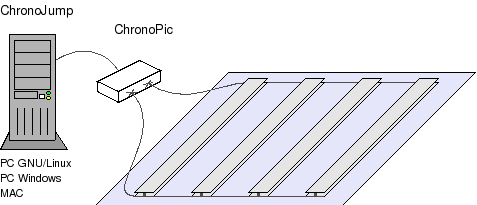

|
Tarjeta Chronopic 1.0 [Proyecto Chronojump] |
|
|
La tarjeta cronopic permite cronometrar el tiempo entre eventos producidos por una o más plataformas de contactos, y enviarlos a un PC a través del puerto serie.
|
 |
|
Disponible el prototipo 1. Más información aquí. |
Es hardware libre.
Basada en el microcontrolador PIC16F876A
Comunicación serie estándar con un PC a 9600 baudios
Tamaño reducido
Botón de test para simular la plataforma (y no tener que estar dando saltos para hacer las pruebas del software!!)
Led de test que indica el estado de la plataforma: Apagado si hay alguien sobre la plataforma y encendido en caso contrario. Muy útil para comprobar que el firmware se ha grabado correctamente.
Alimentación externa entre 4.5 y 6 voltios.
Precisión de 1 milisegundo en las medidas
Tiempo máximo que se puede medir: 134 segundos (2 minutos y 14 segundos)
Hardware libre. Se conceden permisos para su fabricación, copia, modificación, venta o distribución siempre y cuando vaya acompañada de todos los esquemas.
Hasta llegar a versión final hay que cumplir los siguientes hitos:
Prototipo 1. [Completado]. Construcción de una placa prototipo, programación del firmware y validación. Este prototipo es totalmente funcional.
Prototipo 2. [En progreso] Diseño del esquemático y del PCB. Montaje y pruebas. Prototipo de transición para comprobar que el PCB se ha diseñado correctamente y detectar errores antes de mandar a fabricar la versión industrial.
Versión industrial. [NO completado] PCB profesional, con serigrafías y taladros metalizados. Tirada mínima de 30 unidades.
Grabar el firmware en el PIC16F87A de la Chronopic (o cualquiera de sus prototipos). Utilizar para ello un grabador de PICs.
Alimentar la Chronopic entre 4.5 y 6 voltios. Se pueden utilizar por ejemplo 4 pilas de tamaño AA.
Conectar la plataforma de contactos a las clemas de la chronopic.
El led de test permanecerá encendido mientras que no haya nadie en la plataforma (o si la plataforma no está conectada, mientras no esté pulsado el botón de test). Si el led no cambia de estado al apretar y soltar el botón de test es que no se ha grabado correctamente el firmware.
Conectar la chronopic al PC
Bajar el software de pruebas chronopic-test-1.0.bin.tgz
Descomprimirlo y entrar en el directorio creado:
|
$ tar vzxf chronopic-test-1.0.bin.tgz $ cd chronopic-test-1.0 |
Ejecutar el programa test-saltos, indicando el dispositivo serie donde está conectado chronopic. En mi caso lo tengo en el /dev/ttyS0
|
$ ./test-saltos /dev/ttyS0 test-saltos. (c) Juan Gonzalez. Febrero 2005. Licencia GPL Medicion del tiempo de vuelo de los saltos SUBA A LA PLATAFORMA PARA REALIZAR EL SALTO |
Entra en la plataforma o deja apretado el botón de test. El software detectará el evento producido y aparecerá el siguiente mensaje:
|
Puede saltar cuando quiera Pulse control-c para finalizar la sesion ----------------------------------------- |
Realizar el salto o soltar y volver a apretar el botón de test para simularlo. Se detectará el evento y se mostrará el tiempo de vuelo (la duración del salto) en milisegundos. Se pueden realizar tantos saltos o pruebas como se quiera. Para finalizar pulsar control-c.
|
Tiempo: 252.5 ms Tiempo: 364.4 ms [...] |
Si al ejecutar el programa la chronopic no estuviese conectada, o correctamente alimentada o se hubiese especificado un puerto serie diferente el programa no arrancaría y daría este mensaje de error:
|
$ ./test-saltos /dev/ttyS0 test-saltos. (c) Juan Gonzalez. Febrero 2005. Licencia GPL Medicion del tiempo de vuelo de los saltos ChonoPIC no conectado |
|
Firmware |
|
Firmware de chronopic 1.0. Fuentes. En ensamblador para el PIC16F87A |
|
|
Firmware de chronopic 1.0. Fichero .hex a grabar en el PIC16F87A |
|
Software de pruebas |
|
Software en el PC para hacer pruebas de Chronopic. Fuentes para Linux. |
|
|
Software en el PC para hacer pruebas de Chronopic. Binarios. |
Proyecto chronojump. Albergado en los servidores de Gnome.
Tarjeta Skypic: la placa libre a partir de la cual se ha construido el prototipo 1 y de la cual se ha derivado la chronopic.
Artículo sobre la skypic: enviado al I congreso de Tecnologías del Software libre celebrado en Julio de 2005 en A Coruña.
22/Mayo/2006: Cambiados los enlaces para apuntar a la nueva versión de Chronojump albergada en los servidores de Gnome
30/Agosto/2005: Publicada primera versión de esta página